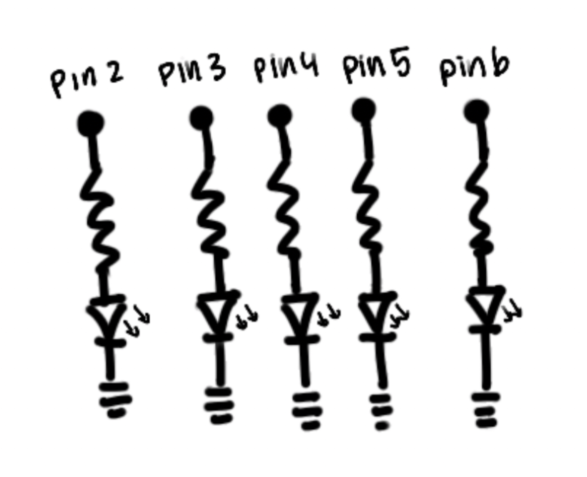
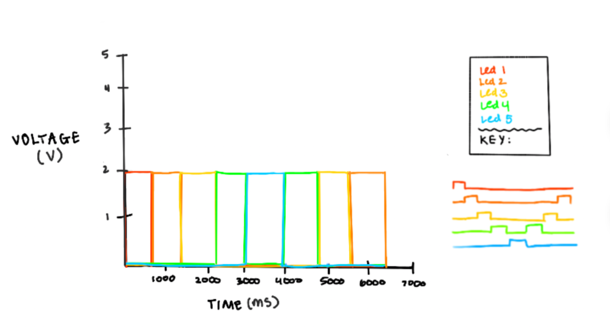

Schematic

Each LED is connected to a separate digital pin and grounded through a resistor which allows for independent control each of the 5 LEDs.
Circuit

I used 220Ω resistors to limit the current through each LED, preventing damage while keeping brightness.
Calculating resistance using Ohm's law
- Arduino output voltage = 5V
- Typical LED voltage ≈ 2V
- Desired current ≈ 20 mA (0.02 A)
- Resistance = (Vsource − VLED) / I
- R = (5V − 2V) / 0.02A
- R = 3 / 0.02
- R = 150 Ω
Use a 220 Ω resistor!
Code
// Blink (5 LEDs)
// Store the digital pin number for LED 1
int pin1 = 2;
// Store the digital pin number for LED 2
int pin2 = 3;
// Store the digital pin number for LED 3
int pin3 = 4;
// Store the digital pin number for LED 4
int pin4 = 5;
// Store the digital pin number for LED 5
int pin5 = 6;
// Setup runs once Arduino starts/resets
void setup() {
// Initialize LED 1 pin as output
pinMode(pin1, OUTPUT);
// Initialize LED 2 pin as output
pinMode(pin2, OUTPUT);
// Initialize LED 3 pin as output
pinMode(pin3, OUTPUT);
// Initialize LED 4 pin as output
pinMode(pin4, OUTPUT);
// Initialize LED 5 pin as output
pinMode(pin5, OUTPUT);
}
// Loops repeatedly after setup
void loop() {
// pin1 LED ON
digitalWrite(pin1, HIGH);
// Keep pin1 LED on for 600 milliseconds
delay(600);
// pin1 LED OFF
digitalWrite(pin1, LOW);
// pin2 LED ON
digitalWrite(pin2, HIGH);
// Keep pin2 LED on for 700 milliseconds
delay(700);
// pin2 LED OFF
digitalWrite(pin2, LOW);
// pin3 LED ON
digitalWrite(pin3, HIGH);
// Keep pin3 LED on for 800 milliseconds
delay(800);
// pin3 LED OFF
digitalWrite(pin3, LOW);
// pin4 LED ON
digitalWrite(pin4, HIGH);
// Keep pin4 LED on for 900 milliseconds
delay(900);
// pin4 LED OFF
digitalWrite(pin4, LOW);
// pin5 LED ON
digitalWrite(pin5, HIGH);
// Keep pin5 LED on for 1000 milliseconds
delay(1000);
// pin5 LED OFF
digitalWrite(pin5, LOW);
// pin4 LED ON
digitalWrite(pin4, HIGH);
// Keep pin4 LED on for 900 milliseconds
delay(900);
// pin4 LED OFF
digitalWrite(pin4, LOW);
// pin3 LED ON
digitalWrite(pin3, HIGH);
// Keep pin3 LED on for 800 milliseconds
delay(800);
// pin3 LED OFF
digitalWrite(pin3, LOW);
// pin2 LED ON
digitalWrite(pin2, HIGH);
// Keep pin2 LED on for 700 milliseconds
delay(700);
// pin2 LED OFF
digitalWrite(pin2, LOW);
}
Circuit Operation

The LEDs light up in sequence from left to right and then back to left, staying lit for a slightly different duration each time to create a wave effect.
Questions
1: Voltage across the LEDs.

Each line on the graph represents the voltage across one LED over time. When an LED is ON, the voltage across it rises to around 2V. When the LED is OFF, the voltage drops to 0V. The staggered timing of the voltage reflects the delays outlined in the code ranging from 600ms to 1000ms and totaling 6.4 seconds per cycle.
2: How many LEDs could you blink independently with your Arduino? How much current would that draw?
The Arduino total current limit is 200 mA (ideally less than 150 mA) across all pins, so you could make around 10 LEDs blink independently and safely based off the recommended current 20mA for each one. If you were to calculate in theory ignoring safety, the Arduino has 14 pins so you could draw in 280 mA in total.
3: How fast do you need to blink your LEDs until you no longer can tell that they are blinking?
I initally went to the opposite to what I originally programmed and tested smaller delay (1-5 ms) and while the lights flickered, you couldn’t tell they were blinking in sequence. To verify, I tested with a greater delay (22-25 ms) and you could still tell they were blinking.
4: Did you use AI tools in completing this assignment? If yes, please provide details on how/when, as well as a brief reflection. If no, you can either leave this question blank, or provide other information if you'd like.
I used AI tools to make a checklist of all the deliverables for this assignment to double check I did not miss any part, once I was finished. I also used it to help me format my style.css file to make sure all the content looked presentable.